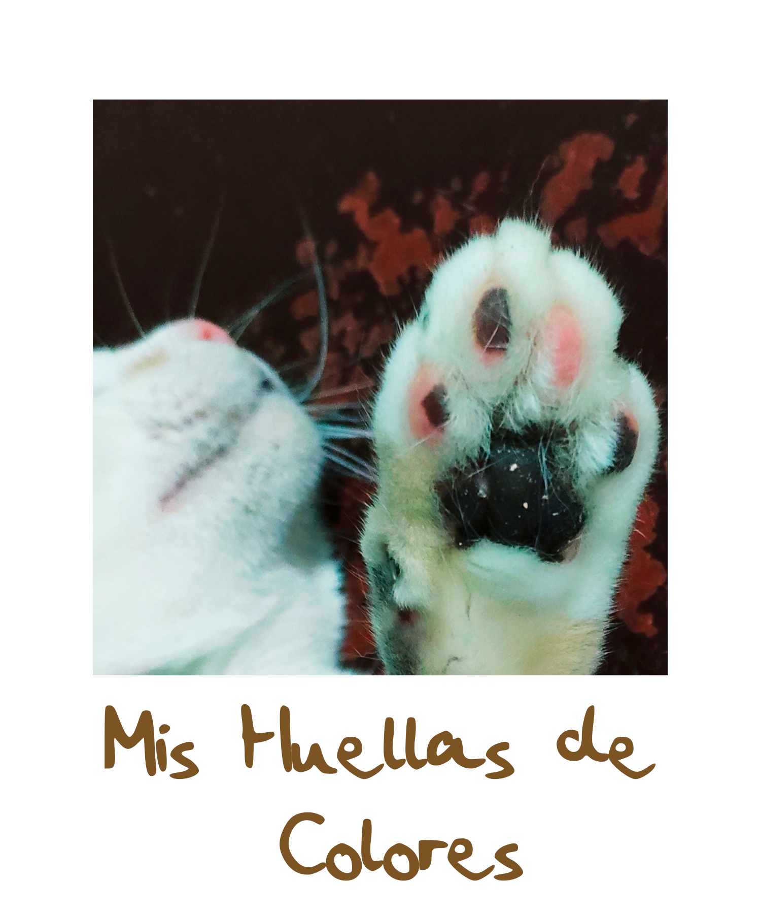
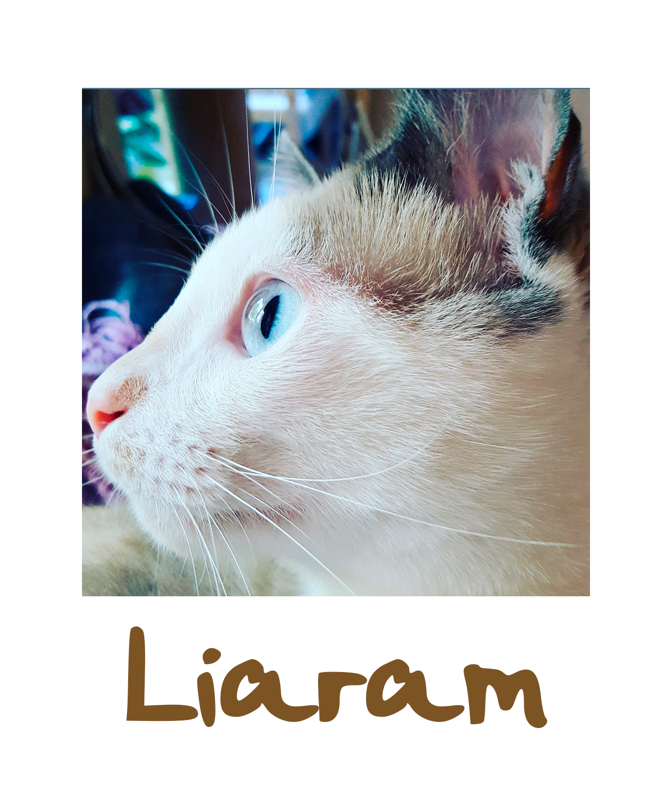
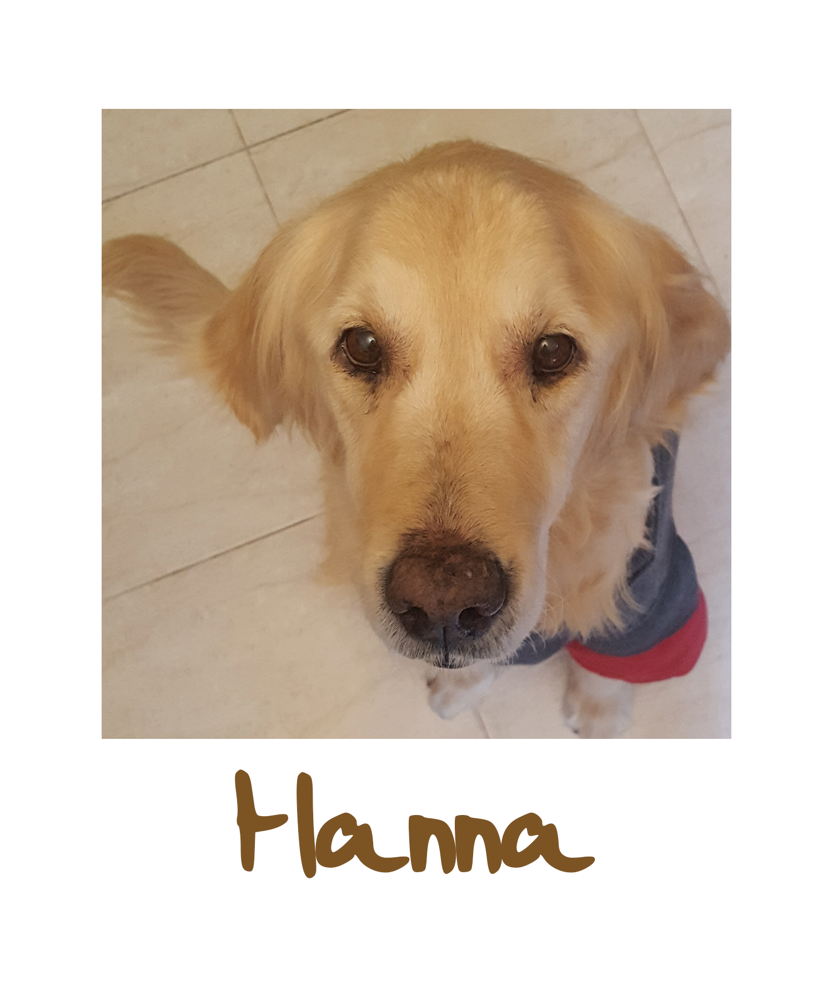
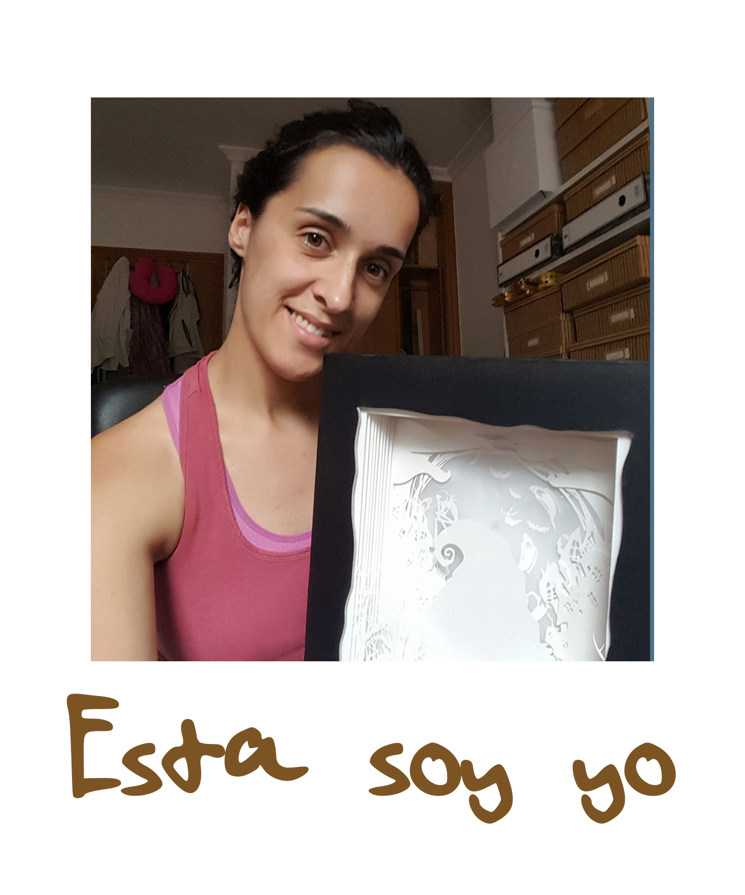

 Hola, me llamo Dayana y os doy la bienvenida a mi página
Desde pequeña he sentido mucho interés por los colores, los dibujos, hacer cosas con mis propias manos y darle un toque personal a mis objetos y regalos
Mis primeros recuerdos sobre las manualidades, aprender a pintar y dibujar…son con mi abuelo, el me enseño a hacer mariposas sencillas con apenas unos trazos
del bolígrafo y me hacía dibujos de burros que nunca pude replicar, el no solo me enseñó mis primeros dibujos si no que lo importante es el amor que le pones,
ya que lejos de ser un gran dibujante, le ponía mucho cariño a enseñarme y hacía de esos momentos algo especial entre nosotros dos, momentos muy divertidos que
repetíamos cada vez que podíamos
También recuerdo pedirle a mi padre que me hiciera dibujos de barcos o casas para luego poder llenarlas de color…como le cogía trozos de madera a los albañiles y
hacía cuadros con ellos y a pesar de que me riñeron porque lo hacía sin pedirles permiso, cuando vieron para que los usaba, uno de ellos me hizo mi primer atril
con trozos de maderas que tenían por allí
Piedras, tubos de cartón del papel higiénico, maderas, trozos de telas, cartones…todo me servía, nunca deslumbré por mis increíbles trabajos pero sí por el ingenio,
por buscarme la vida para hacer bonito algo que iba a ir a la basura
 Por eso hemos creado esta página, no es un blog, tampoco una tienda online, es un trocito de mi
donde puedo expresarme más que con palabras a través de mis trabajos, un lugar para compartir, ayudar y acercarme a todos vosotros
Aquí os presento “Mis Huellas de Colores”, un proyecto que nació en 2016, gracias al apoyo de amigos y familiares, quienes me animaron a compartir públicamente mis
trabajos
Al pensar en enseñar lo que hago me surgió la necesidad de buscar un nombre para mi proyecto, quería que significara algo especial para mi y se relacionara con lo que
hago. De dónde salió Mis Huellas de Colores? Pues tras mucho pensar, hacer bocetos, juegos de palabras y etc. Un día jugando con las almohadillas de las patitas de mi
gata Lia, se me ocurrió el nombre porque sus almohadillas son de dos colores, una auténtica cukada!! Y de ahí salió en nombre. Además de estar vinculado a mis mascotas
también me pareció tierno pensar que todos los proyectos que hago acaban siendo una pequeña huella, un recuerdo del trabajo y cariño que pongo cuando los realizo

Como podréis ver realizo muchísimas técnicas porque me encanta probar nuevos materiales, usar distintas máquinas y mezclarlas entre sí
No quiero despedirme sin dar las gracias por visitar mi página, por regalarme un pedazo de vuestro tiempo y comentaros que tenéis el contacto del resto de
mis redes y mi WhatsApp para cualquier duda o comentario que queráis hacerme llegar
Besitos mil